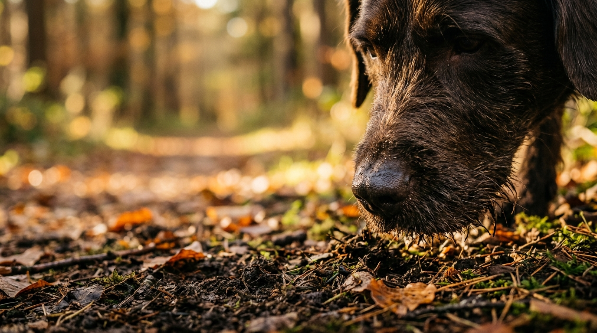
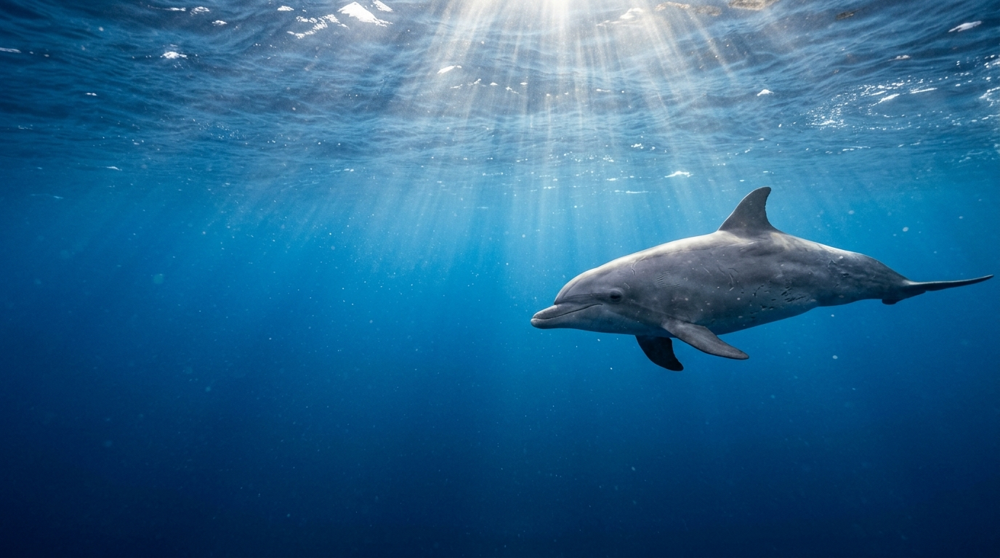
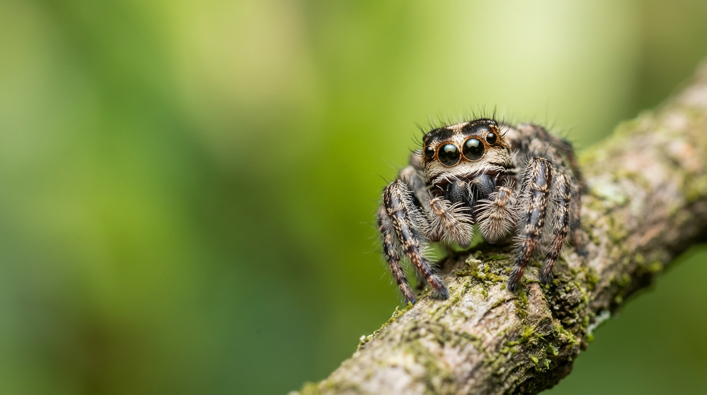
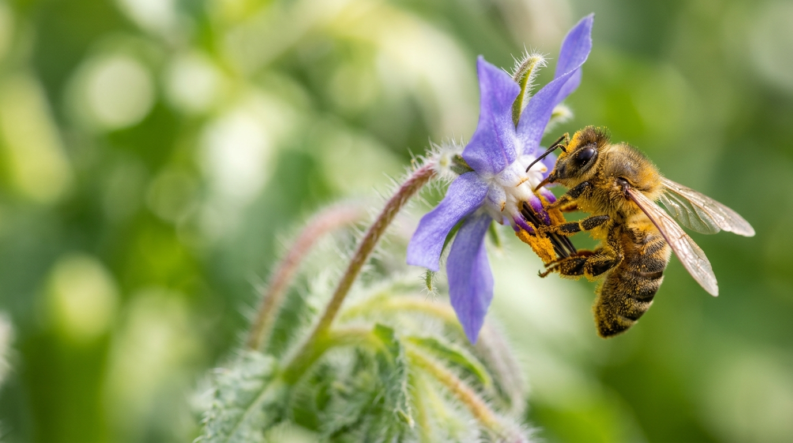
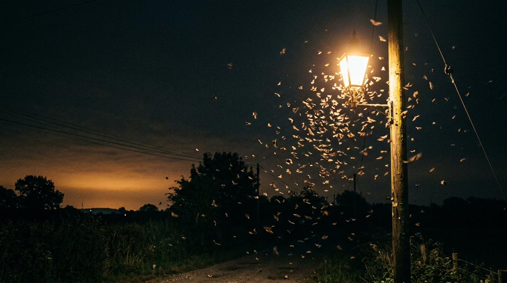

L’altro mondo della percezione animale
da Un mondo immenso di Ed Yong
01 — Umwelt
Ogni animale vive nel suo mondo
Il biologo Jakob von Uexküll la chiamava Umwelt: la bolla sensoriale attraverso cui ogni specie percepisce la realtà. Noi abitiamo un mondo di immagini; il cane un mondo di odori, in cui il naso racconta il passato, il presente e il futuro di un luogo.


02 — Sensi
Sensi oltre i nostri
Con l’ecolocalizzazione il delfino vede dentro i corpi: polmoni, scheletro, perfino un feto. Il pesce gatto è «una lingua che nuota». Tartarughe e falene si orientano con il campo magnetico, l’unico senso di cui non conosciamo ancora il sensore.
03 — Diversità
Diversità, non superiorità
Nessuna specie è migliore delle altre: ognuna è limitata in qualcosa e straordinaria in altro. Gli animali non sono modelli per capire noi stessi, hanno valore in sé. Lasciare che il cane faccia il cane: pensare con gli animali, anche se non come loro.

04 — Relazione
I sensi si plasmano a vicenda
I fiori hanno preso i colori adatti agli occhi delle api, nati milioni di anni prima di loro; le rane velenose si sono colorate per la vista degli uccelli.
«La bellezza non è soltanto nell’occhio di chi guarda. È quello stesso occhio a farla sbocciare.»

05 — Estinzione
Stiamo spegnendo i loro mondi
Abbiamo riempito la notte di luce, il silenzio di rumore, la terra e l’acqua di molecole sconosciute. Con la sesta estinzione non perdiamo solo delle specie: perdiamo interi modi di percepire, e di capire, l’esistenza.
